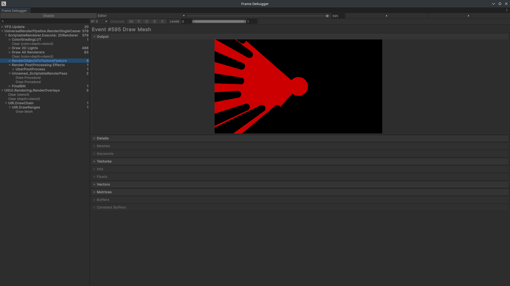

Skills Used: C#, Unity, Network Engineering, HTML/CSS, Systems Arcitecture, Teamworking & Management, Graphics Programming
Download and play it on itch.io here!

Nightmorn is still in active development by myself and the rest of the team at Keeled-Moon I will try to keep this page relatively up to date.
For this project I serve as lead programmer and netcode arcitect - but most of my in the trentches work is UI programming with Unity UI-Toolkit.
I handle nearly all of the backend containing code for Nightmorn the stuff that people don't notice unless it doesn't work. These are things like control rebinding, graphics settings, proper application life cycle.
 One of the more speicalised roles tasks for Nightmorn I have undertake is a custom renderpass for generating a mask for the vision cone effect. The pass rendered the two vision cone components into a texture another pass then blurred then annother used the blurred output as a mask for colouring.